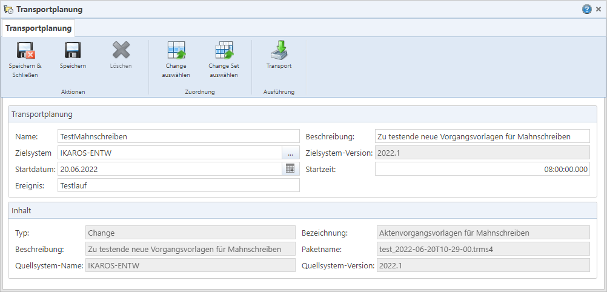

Textfeld „Name“: Der maximal 50
Zeichen lange, eindeutige Name für den Transportauftrag.
Textfeld „Name“: Der maximal 50
Zeichen lange, eindeutige Name für den Transportauftrag.
Abb. 32: Dialog für einen Transportauftrag
Rahmen „Transportplanung“
Textfeld „Name“: Der maximal 50
Zeichen lange, eindeutige Name für den Transportauftrag.
Textfeld „Beschreibung“: Eine
Beschreibung zu dem Transportauftrag. Sie wird unter anderem in der Übersicht
der Transportprotokolle angezeigt.
Auswahlfeld „Zielsystem“: Das
IKAROS-System, in das der Change bzw. das Change Set übertragen und installiert
werden soll.
Datumsfeld „Startdatum“[*]: Das
Datum hat derzeit keine technische Auswirkung, sondern kann zur manuellen
Organisation von Transporten herangezogen werden.
Zeitfeld „Startzeit“[*]: Die
Uhrzeit hat derzeit keine technische Auswirkung, sondern kann zur manuellen
Organisation von Transporten herangezogen werden.
Textfeld „Ereignis“[*]: Das
„Ereignis“ hat derzeit keine technische Auswirkung, sondern kann zur manuellen
Organisation von Transporten herangezogen werden.
[*] Hinweis: Für das TRMS ist eine Anbindung an Scheduler-Anwendungen geplant, welche dann das Startdatum, die Startzeit sowie den „Ereignis“-Ausdruck für die automatisierte Ausführung auslesen könnten.
Rahmen „Inhalt“
Textfeld „Typ“: Zeigt an,
welche Art von Artefaktpaket mit dem Auftrag transportiert werden soll. Möglich
sind „Change“ und „Change Set“. Das TRMS trägt den Wert automatisch ein, sobald
dem Auftrag der gewünschte Change bzw. das gewünschte Change Set zugewiesen
wurde.
Textfeld „Bezeichnung“: Enthält
die Bezeichnung des gewählten Changes/Change Sets. Wird vom TRMS automatisch
eingetragen.
Textfeld „Beschreibung“: Die
Beschreibung des gewählten Changes/Change Sets. Wird vom TRMS automatisch
eingetragen.
Textfeld „Paketname“: Der Name
des „.trms4“-Pakets zum gewählten Change/des Change Sets, falls eines bereits
generiert (und somit in der TRMS-Datenbank gespeichert) wurde; wird vom TRMS
automatisch eingetragen. Um ein Paket vorab zu erstellen, müssen Sie die
Schaltfläche „Erstellen“ in den Menüpunkten „Changes“ [Link] oder „Change Sets“ [Link] bzw. im Dialog des erweiterten
Artefaktpaket-Assistenten nutzen [Link].
Hinweis: Falls das Paket zum Zeitpunkt des Transportvorgangs noch nicht in der Datenbank gespeichert vorliegt, wird es vom TRMS automatisch erzeugt. Dies erfordert zum einen Zugriff auf das Quellsystem und kann den Transportprozess zum anderen verlängern.
Textfeld „Quellsystem-Name“:
Der Name des Systems, aus dem die Artefakte im gewählten Change/Change Set
stammen. Wird vom TRMS aus dem Change/Change Set übernommen.
Textfeld „Quellsystem-Version“:
Die IKAROS-Version des Quellsystems, wie sie im Change/Change Set steht.
Schaltflächen
|
Symbol |
Schaltfläche |
Beschreibung |
|
|
„Speichern & Schließen“ [Strg] + [H] |
Speichert die Änderungen am Transportauftrag und schließt den Dialog. |
|
|
„Speichern“ [Strg] + [S] |
Speichert die Änderungen am Transportauftrag. |
|
|
„Löschen“ [Strg] + [D] |
Löscht den Transportauftrag nach der Bestätigung einer Sicherheitsabfrage dauerhaft aus der Datenbank des TRMS.
|
|
|
„Change auswählen“ [Strg] + [L] |
Öffnet eine Liste mit Changes, um dem Transportauftrag einen davon zuzuweisen. Einem Transportauftrag muss immer genau entweder ein Change oder ein Change Set zugewiesen sein. |
|
|
„Change Set auswählen“ [Strg] + [Umschalt] + [L] |
Öffnet eine Liste mit Change Sets, um dem Transportauftrag einen davon zuzuweisen. Einem Transportauftrag muss immer genau entweder ein Change oder ein Change Set zugewiesen sein. |
|
|
„Transport“ [Strg] + [i] |
Öffnet einen Dialog zur Anmeldung am Zielsystem und startet den Transportprozess für den markierten Transportauftrag. Das Protokoll dazu können Sie im Menüpunkt „Transportprotokolle“ öffnen. |